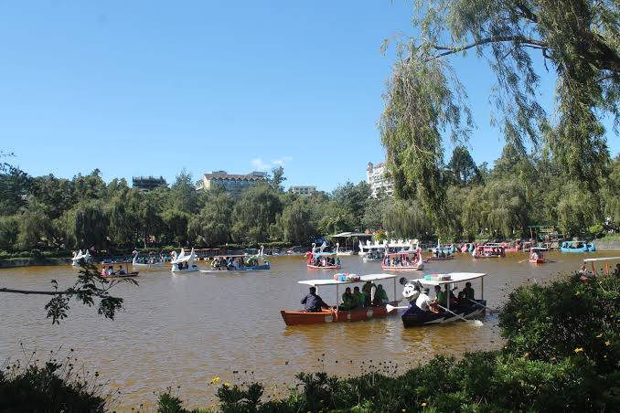
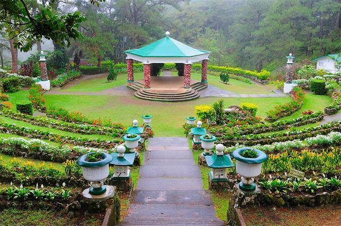
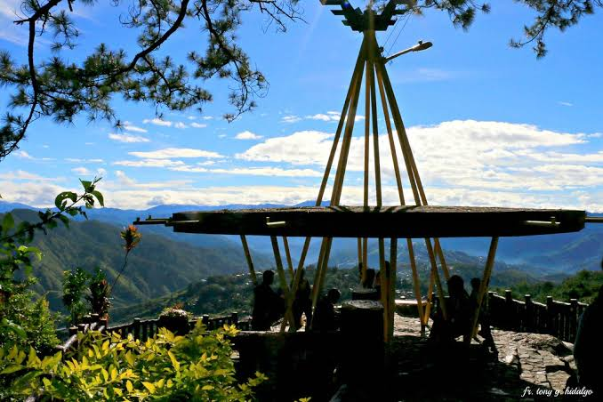
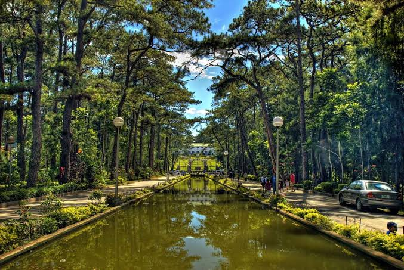
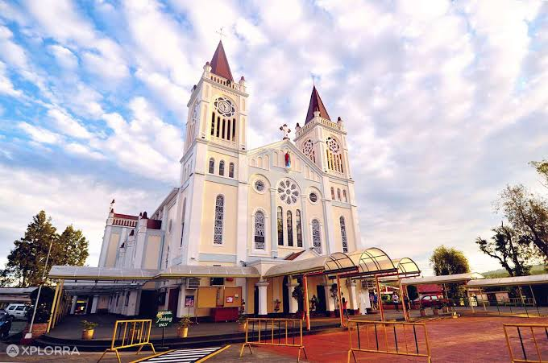

|  |
Burnham ParkThis tourist attraction in the city is primarily considered as the heart of Baguio City. It strategically sits on a 32.84 hectare vast land. Significantly, its central location makes it as one of the most highly-priced real estate, in the North. Historically, this park was designed by a premiere American architect and urban planning guru, David Burnham. |
|  |
Camp John Hayit is a beautiful resort within the tall and lush mountains of Baguio City. To exude its marvelous characterization of beauty cum prestige, this particular tourist attraction of Baguio City glamorously possesses the especially designed golf course of golf legend, Jack Nicklaus. To describe, the uniquely designed golf course was said to be one of the Philippines’ first and finest because it has bentgrass greens, hotels, convention and shopping centers, among others. In addition this, Camp John Hay has been designed with a second entrance which is easily accessible via the Baguio Country Club Road. As for its historical milestone, the said tourist spot was a former rest and recreation facility of Gi Joe soldiers. Through the years, much have been said about; and it had undergone several renovations. To name a few, it was lavishly converted into a privately-owned resort. Personally, the private developers of Camp John Hay had opted to eradicate the favorite landmarks and tourists haunts of the olden days in and around Camp John Hay. Magnificently, they were replaced by modernized architectural structures like for instance, the “Old World Main Club”. Despite of all these architectural makeovers, it is still a distinctively world-class tourist attraction of Baguio City. |
|  |
Mines View ParkTurning back the hands of time, the Mines View Park is one of Baguio City’s timeless legacies that you must not miss. “What about it?” Well, this tourist spot in the City of Pines is described as a ridge; beautifully situated at the extreme northeastern section of the Philippines’ summer capital. It passes by “The Mansion”, and the Wright Park respectively. Speaking of its highlights, tourists whether foreign and local will be having a great time at Mines View Park, because there are lots of commercial-related endeavors around that will undoubtedly capture there inherent business inclinations in the near future. On the other hand, for those who love to wear genuine silver accessories Mines View Park is the best place to be. There are wide varieties of souvenir items and creatively carved artifacts which are readily available at Rimando’s. To make your trip more memorable, at Mines View Park you and your friends will have the chance to dress up in a fully- made up Cordillera attire. This fashionable regalia of the North is complete with a bahag, shield and a spear for the male gender. As for its counterpart, headdresses and colorful tapis will be worn in all simplicity and admirable exuberance, by beautiful girls. Lastly, one’s rendezvous with Mine’s View Park would never be more enjoyable if you will not drop by at the Good Sheperd’s Convent where one can buy lots of sweet delicacies such as ube strawberry jams, peanut and cashew brittles; and other delectable goodies, to satisfy the cravings of your sweet tooth. |
|  |
The MansionNeedless to say, this is the official Residence of the President of the Philippines, here in Baguio City. Location wise, it can be easily found on the eastern side of the city, along the Carlos Pena Romulo Drive; and just right across the Wright Park. Also, the Mansion in the highly-urbanized city of Baguio; is one of the most frequently photographed landmarks in Pines City. Inside the premises of “The Mansion” is a mini museum which takes care of the memorabilia and other historical works of art; which had been collected over the years during the incumbency of a particular Philippine president. Likewise, within the compound which is so close to this particular tourist spot; is a grandiose two-storey building which is nonetheless, the official residence of the Philippines’ Chief Executive. Nearby, the entourage of the First family can have fun together while watching historical films in a small but technologically-advanced amphitheatre. In the colorful pages of Philippine history, “The Mansion” had served as the “Seat of the Second Session of the Economic Commission of Asia and the Far East. |
|  |
Baguio CathedralThis religious sanctuary in Baguio City is originally known as the “Our Lady of Atonement Cathedral”. Amazingly, the Baguio Cathedral was majestically built on the top of the hill, in the heart of Baguio City. To provide you with a clear image of how the Baguio Cathedral exactly looks like, it is a rose-colored structure, with uniquely fabricated dual spires, which no other church in the Philippines ever had. . Aside from that, the famous church in Baguio is one of the country’s most alluring architectural creations that man had ever made. Accordingly, this tourist attraction is the most magnificent building in the city. Similarly, if you want to see the towering altitude of the cathedral, you have to proceed to the Session Road of Baguio City. Then, you have to painstakingly climb a hundred steps, to make your fondest dream a reality. On the contrary, the other easy route in going to this palatial church of the northern people is this. One has to hire or drive his own car or any other form of vehicle; and proceed towards the so-called “access roads,” just behind the Baguio Post Office. Innovatively, the Baguio Cathedral is equipped with fully-functional escalators which are located at the CICM-owned Porta Vaga Shopping Mall. From its uppermost floor, there is an exit passage which leads you all the way to the parking ground of the highly-revered Cathedral of Baguio City. |